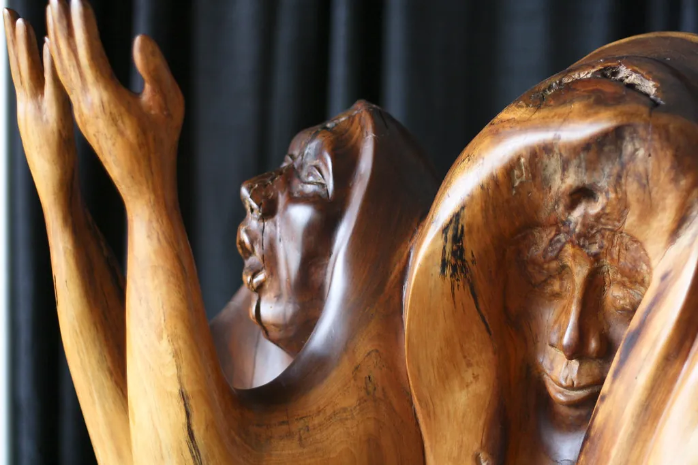
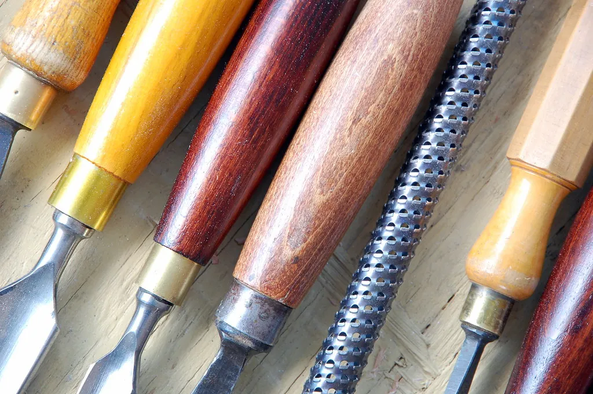
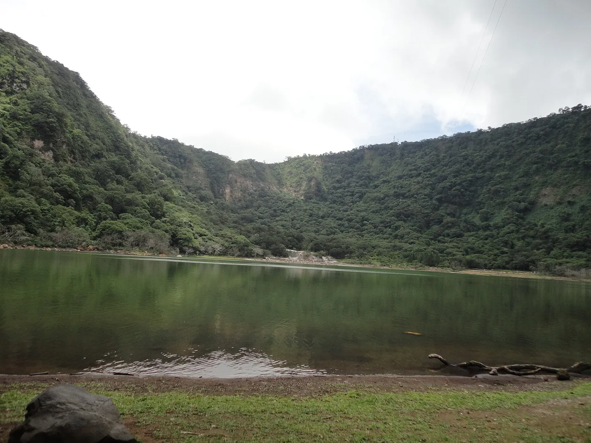
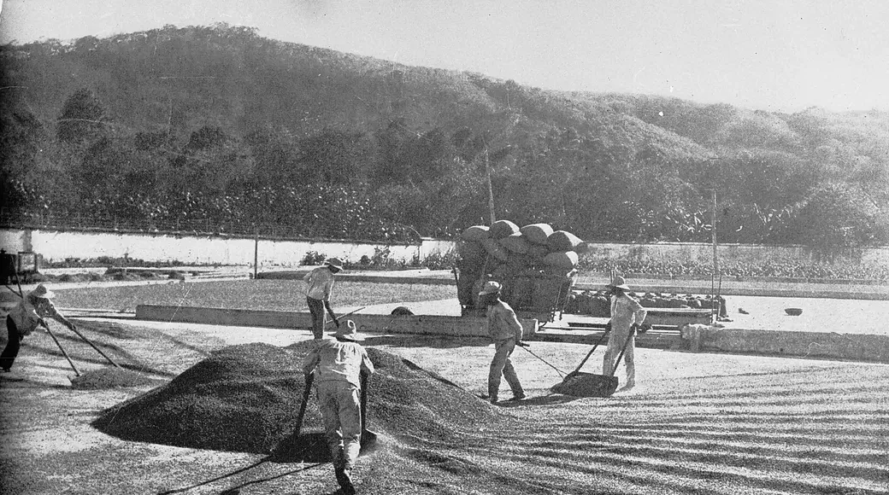

Artesanías Don Julio
Two things, one man, in Berlín, Usulután.
The shop on the square
Don Julio sells colourful handmade pieces from his shop on Berlín’s main square. The town is known for crafts made from wood, seeds and natural fibres.
Ask about a piece


Laguna de Alegría, a crater lake near Berlín.
Hike with Don Julio
He knows the paths up the volcanoes and down to the lagoons around Berlín. Tell him your day and your pace and he’ll suggest a route.

Coffee country
Berlín sits in the coffee highlands of Usulután, among farms, volcanoes and crater lakes.
Find the shop
Calle Dr. Antonio Guandique Poniente, by the central square of Berlín, Usulután. Message Don Julio for today’s opening times.